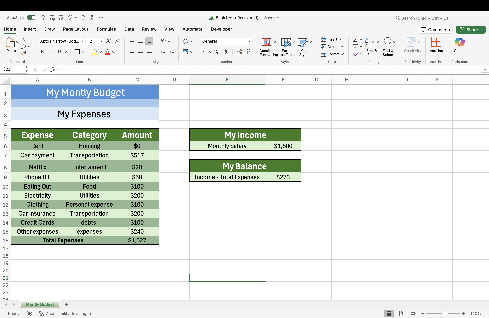

Exploring how the RISEN framework improves AI prompt quality across different business scenarios — including email writing, personal finance, and small business marketing.
Task: Choose a common business task (e.g., writing an email, summarizing a report, creating a financial overview).
Write an email to a customer who couldn't receive her package yesterday, like apologizing for the delay.
Subject: Apology for Delivery Delay
Dear [Customer Name],
I hope you are doing well. I am writing to sincerely apologize for the delay in delivering your package, which was expected to arrive yesterday. We understand how important it is for you to receive your order on time, and we are truly sorry for any inconvenience this may have caused.
Please know that we are currently looking into the situation to ensure your package reaches you as soon as possible. We are working closely with our delivery team to resolve the issue and prevent this from happening again in the future.
Thank you for your patience and understanding. If you have any questions or need further assistance, please feel free to reach out to us.
Best regards,
[Your Name]
[Your Company Name]
[Contact Information]
Act as an assistant and write an apology email to a customer who was unable to receive their package yesterday. The email should be professional, empathetic, and offer a solution to resolve the issue. Be sure to include a sincere apology, a brief explanation of the delay, and an offer to compensate the customer for any inconvenience caused. Also, provide contact information so the customer can reach out if they have further questions or need additional assistance.
Subject: We're Sorry About Your Delivery - We're Making It Right
Dear [Customer Name],
I hope this message finds you well. On behalf of our entire team, I want to sincerely apologize for the inconvenience you experienced with your recent delivery. We completely understand how frustrating it can be to expect a package and not receive it as promised.
After reviewing your order, we found that your delivery was delayed due to [brief reason, e.g., an unexpected carrier disruption / high package volume in your area / a logistical error on our end]. This is not the standard of service we hold ourselves to, and we take full responsibility for the inconvenience this has caused you.
To make this right, we have already taken the following steps:
We truly value your business and want to ensure this experience doesn't reflect the level of care we strive to provide every customer. Please don't hesitate to reach out to us directly if you have any further questions or need additional assistance:
Thank you for your patience and understanding. We look forward to making this right for you.
Warm regards,
[Your Full Name]
Customer Support Team
[Company Name]
Task: Apply RISEN in your field of interest (e.g., accounting, healthcare, HR, finance).

Act as a personal finance advisor who helps individuals improve their monthly budget, reduce expenses, and increase savings.
Use the following excel monthly budget data I attached.
Provide suggestions like:
Format the response in short paragraphs or bullet points.
Make sure your advice is realistic for someone who may sell their car in the future and currently lives with family, so some expenses may decrease over time.
Great news — you're already in a positive position with a $273 monthly surplus! That's a solid foundation to build on. Let's make it work even harder for you.
| Expense | Amount | Type |
|---|---|---|
| Car payment | $517 | Necessary (for now) |
| Electricity | $200 | Necessary |
| Car insurance | $200 | Necessary (for now) |
| Other expenses | $240 | Worth reviewing |
| Credit cards | $100 | Necessary (reduce over time) |
| Eating out | $100 | Optional |
| Clothing | $100 | Optional |
| Phone bill | $50 | Optional |
| Netflix | $20 | Optional |
Necessary: Car payment, electricity, car insurance, phone bill, credit cards.
Optional or Reducible: Eating out ($100), clothing ($100), Netflix ($20), and the "other expenses" category ($240) — this last one deserves a close look since it's your 3rd highest expense and likely has hidden savings inside it.
1. Cut eating out in half — Going from $100 → $50/month by cooking at home just a few more times a week is one of the easiest wins. Meal prepping on Sundays can save both time and money. Savings: ~$50/month.
2. Audit the "Other Expenses" category — $240 is a significant amount labeled vaguely. Break it down — are there subscriptions, impulse buys, or habits hidden in there? Cutting even 25% is realistic. Potential savings: ~$60/month.
3. Reduce clothing spending — $100/month on clothing is higher than average for someone in a tight budget. Shifting to $40–$50/month — or buying only when truly needed — makes a real difference. Savings: ~$50–$60/month.
Future opportunity: Once you sell the car, your car payment ($517) + car insurance ($200) = $717/month freed up. That's life-changing for your budget. Even switching to a cheaper insurance plan before then could save $30–$50/month.
1. Pay yourself first — automate a small savings transfer — Even saving $100–$150/month automatically (right when your paycheck hits) builds a real emergency fund. With your current $273 surplus, this is doable today without feeling it much. After your spending cuts, you could push this to $200–$300/month.
2. Explore a small side income — Since you live with family and have lower fixed housing costs, you have flexibility others don't. Even $100–$200 extra per month from freelancing, selling items online, or a few weekend gig hours (DoorDash, TaskRabbit, etc.) can accelerate your savings dramatically.
| Now | After Changes | |
|---|---|---|
| Income | $1,800 | $1,800 |
| Total Expenses | $1,527 | $1,367 |
| Monthly Balance | $273 | ~$433 |
| Monthly Savings | $0 | $150-$200 |
And when the car is eventually sold? Your monthly surplus could jump to $900+, giving you the ability to save aggressively, pay off credit cards fast, or build toward big goals.
I think the AI response is really good and easy to understand. It clearly breaks down the budget and shows which expenses are the highest, like the car payment and "other expenses." It also separates what is necessary and what is optional, which makes it easier to see where I can save money.
The advice is realistic and not extreme. For example, cutting eating out, spending less on clothes, and checking the "other expenses" are things I can actually do. I also like that it gives ideas to save more money and even make extra income.
Another good thing is the tone. It feels supportive, not judgmental, which makes the advice feel more helpful. It also connects to my situation, like possibly selling the car in the future.
Overall, the response is clear, practical, and helpful because it gives simple steps I can follow to improve my budget.
Task: Use an AI tool (ChatGPT, Jasper, Claude) to test a business-related prompt.
Give me ideas on how a small business can attract more customers.
Act as a business marketing consultant who helps small businesses grow and attract more customers.
The business is a small local clothing store with a limited budget, trying to increase customer traffic and sales.
Include ideas like social media marketing, promotions, customer experience, or partnerships with other local businesses.
Use a simple, clear, and friendly tone. Keep the advice realistic for a small business with limited money.
Attracting more customers as a small business isn't about doing everything — it's about doing a few things consistently and well. Here are practical, high-impact ideas that tend to work across industries:
1. Make your online presence work for you
If people can't find you, they won't buy from you.
2. Use social media with intention
Don't just post — engage.
3. Offer irresistible first-time incentives
Give people a reason to try you.
4. Build an email or text list
You want a direct line to your customers.
5. Partner with other local businesses
You don't need to grow alone.
6. Focus on customer experience
Word-of-mouth is still king.
7. Run targeted local ads (small budget is fine)
You don't need a huge spend.
8. Host or participate in events
Get visible in your community.
9. Create simple, helpful content
Position yourself as the go-to expert.
10. Track what actually works
Don't rely on guesswork.
If you want, tell me what kind of business you run (or are planning), and I can tailor these ideas into a more specific, step-by-step strategy.
Marketing Ideas for a Small Clothing Store
Since the budget is limited, the goal is to use smart, low-cost strategies that still bring people in.
1. Social Media (Instagram & TikTok)
Post consistently to show your clothes and vibe.
2. In-Store Promotions & Events
Give people a reason to visit now, not later.
3. Improve Customer Experience
Make customers want to come back and tell others.
4. Partner with Local Businesses
Work together with nearby businesses to share customers.
✅ Quick idea to remember: You don't need a big budget — just visibility, good experience, and smart partnerships.
I think the RISEN version is much better than the basic one. The response without RISEN gives a lot of ideas, but it feels more general and not focused on a specific business. It also includes too many points, which can feel overwhelming.
With RISEN, the response is more clear and targeted because it focuses on a small clothing store with a limited budget. The ideas are more relevant and easier to apply, like using Instagram, doing in-store promotions, and partnering with local businesses.
Another improvement is that the RISEN response is more organized and easier to read. It explains how each idea works and gives examples, which makes it more practical. The tone is also simpler and more friendly, so it feels more helpful.
Overall, RISEN improved the response by making it more specific, clear, and useful instead of just giving general advice.